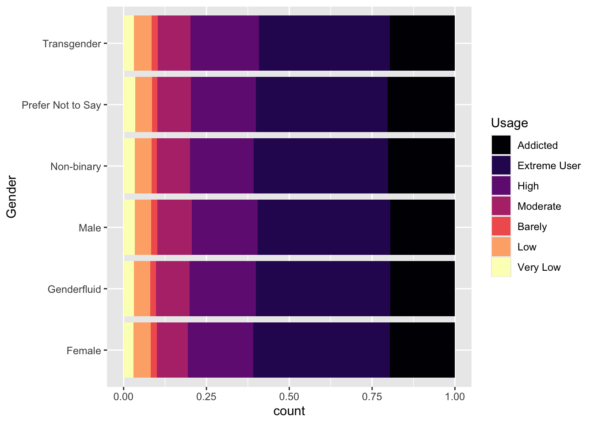
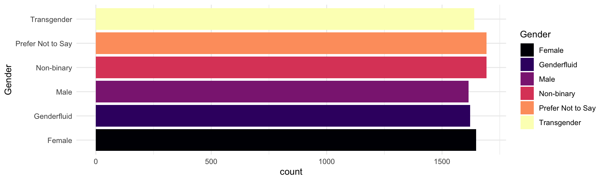
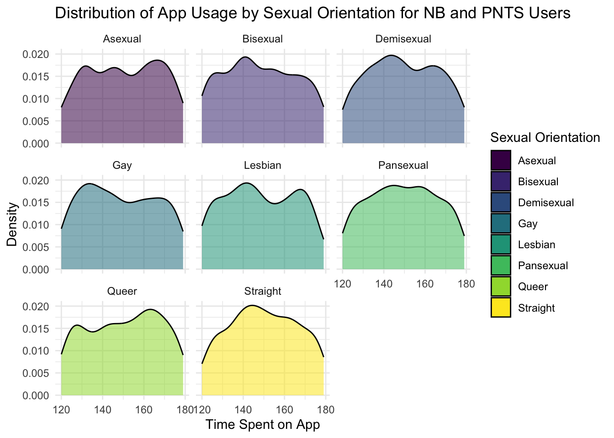
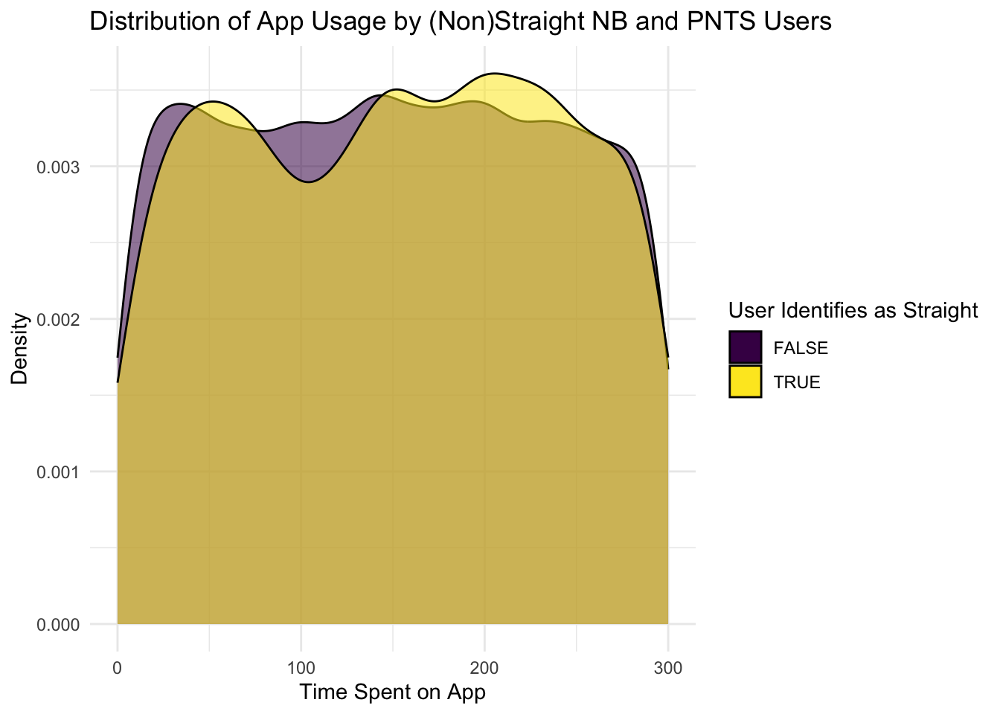
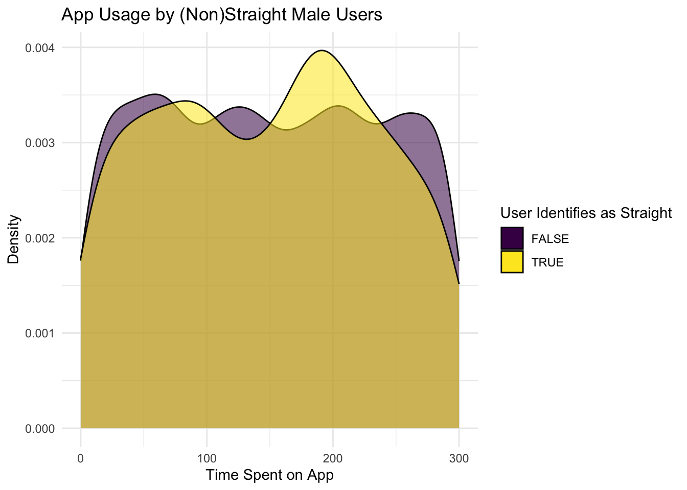
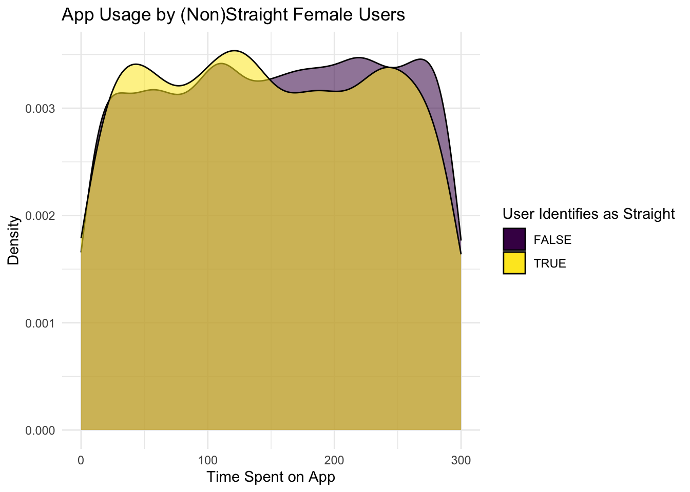
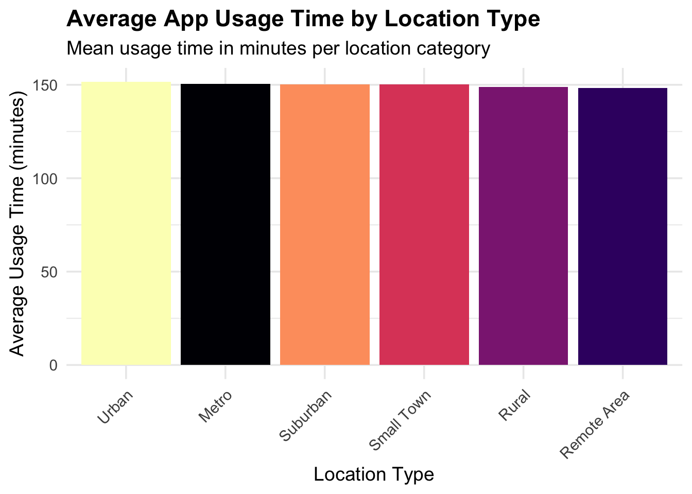
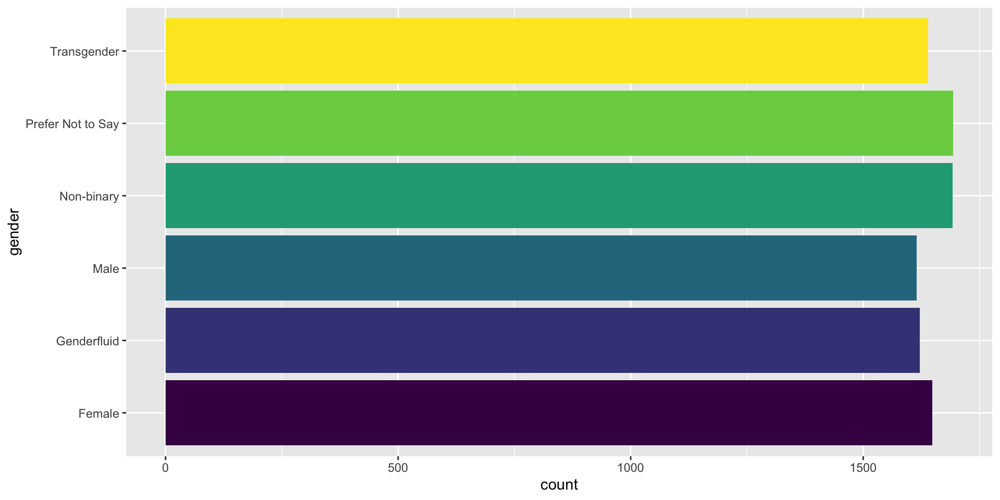

Swiping Through the Spectrum: A Data-Driven Look Into Dating App Behavior
Introduction
In the modern dating scene, the swipe has become a symbol of possibility, rejection, and everything in between. But behind every swipe lies a data point—a reflection of who we are, what we seek, and how our identities shape our digital interactions. This study uses data from a dating app to explore deeper behavioral patterns based on gender, sexual orientation, education4 , income and location.
Why do some users become more “addicted” to dating apps? How do identity and geography intersect with digital romance? And what can these patterns tell us about the broader social experience and interaction of dating in the digital age?
Background
This dataset used in this primary study was a simulation of what a dating app could be. This data was extracted from Kaggle We hope our insights will show meaningful patterns which may be used to further develop dating apps. Our aim is to understand how identity factors relate to app dependency and engagement outcomes, and ultimately explaining broader patterns of human behavior in virtual spaces.
Analysis
Gender Identity
We begin with a broad view of how gender identity intersects with app usage levels.
Code
dating_app_data |>
mutate(app_usage_time_label = fct_relevel(app_usage_time_label,
"Addicted", "Extreme User", "High", "Moderate", "Barely", "Low", "Very Low")) |>
ggplot(aes(y = gender, fill = app_usage_time_label)) +
geom_bar(position = "fill") +
labs(fill = "Usage", y = "Gender") +
scale_fill_viridis_d(option = "magma") +
theme_minimal() 
The first plot reveals that across all gender identities, the largest usage category is Extreme User. This suggests that intense engagement is a platform-wide phenomenon—dating apps are designed to retain attention across the board (Alter, 2017).
But diving into just the Addicted group uncovers something more specific:
Code
dating_app_data |>
filter(app_usage_time_label == "Addicted") |>
group_by(gender) |>
summarize(count = n()) |>
ggplot(aes(y = gender, x = count, fill = gender)) +
geom_col() +
scale_fill_viridis_d(option = "magma") +
labs(y="Gender", fill="Gender") +
theme(legend.position = "none") +
theme_minimal()
Here, Non-binary (NB) users and those who Prefer Not to Say (PNTS) are the most represented. This is a striking finding and may reflect the fact that NB and PNTS users often find more inclusive spaces online than offline, leading to increased app engagement (Miller, 2015). Dating apps may act as rare safe zones for connection, identity exploration, and validation.
Sexual Orientation
Focusing now on NB and PNTS users, we examine how sexual orientation affects app usage time.
Code
dating_app_data |>
filter(app_usage_time_label == "Addicted",
gender %in% c("Non-binary", "Prefer Not to Say")) |>
ggplot(aes(x = app_usage_time_min,
fill = sexual_orientation,
alpha = 0.2))+
facet_wrap(~sexual_orientation)+
geom_density()+
theme_minimal()+
labs (title = "Distribution of App Usage by Sexual Orientation for NB and PNTS Users",
x = "Time Spent on App",
y = "Density",
fill = "Sexual Orientation")+
guides(alpha = "none")+
scale_fill_viridis_d() 
These plots show that Straight and Queer users within NB/PNTS categories peak in app usage between 55–165 minutes. The peaks reflect substantial engagement, possibly driven by the limited dating options in offline settings for these orientations (LeFebvre, 2018).
To test this further, we categorize users as Straight vs. Non-Straight:
Code
dating_app_data |>
filter( gender %in% c("Non-binary", "Prefer Not to Say")) |>
mutate(straight = str_detect(sexual_orientation, "Straight")) |>
ggplot(aes(x = app_usage_time_min,
fill = straight,
alpha = 0.5))+
geom_density()+
theme_minimal()+
labs (title = "Distribution of App Usage by (Non)Straight NB and PNTS Users",
x = "Time Spent on App",
y = "Density",
fill = "User Identifies as Straight")+
guides(alpha = "none")+
scale_fill_viridis_d() 
Interestingly, Straight users within NB/PNTS groups show a second peak around 200 minutes, suggesting a higher dependency or reliance on the app. This could stem from marginalization within both queer and heteronormative spaces, leading to prolonged searching or browsing behavior.
What About Binary Genders?
How do these patterns play out among binary gender groups?
Code
#How does this relationship change if we look at users that identify as male?
#| fig-cap: A density plot depicting the time usage in minutes of male, straight and male, non-straight users on the dating app.
#| fig-alt: A density plot depicting the time usage in minutes of male, straight and male, non-straight users on the dating app..
dating_app_data |>
filter(gender == "Male") |>
mutate(straight = str_detect(sexual_orientation, "Straight")) |>
ggplot(aes(x = app_usage_time_min,
fill = straight,
alpha = 0.5))+
geom_density()+
theme_minimal()+
labs (title = "App Usage by (Non)Straight Male Users",
x = "Time Spent on App",
y = "Density",
fill = "User Identifies as Straight") +
guides(alpha = "none") +
scale_fill_viridis_d() 
For male users, Straight individuals spend slightly more time on the app (peak at ~180 mins), possibly due to cultural norms around men being expected to initiate conversations or compete for attention.
Code
dating_app_data |>
filter(gender == "Female") |>
mutate(straight = str_detect(sexual_orientation, "Straight")) |>
ggplot(aes(x = app_usage_time_min,
fill = straight,
alpha = 0.5))+
geom_density()+
theme_minimal()+
labs (title = "App Usage by (Non)Straight Female Users",
x = "Time Spent on App",
y = "Density",
fill = "User Identifies as Straight")+
guides(alpha = "none") +
scale_fill_viridis_d() 
Among female users, non-straight individuals spend more time on the app, especially past the 150-minute mark. This is may be due to the fact that non-straight female users consistently outnumber straight female users beginning at 150 minutes.
Location
Does where you live change how you date?
Code
dating_app_data |>
group_by(location_type) |>
summarise(location_mean_usage = mean(app_usage_time_min, na.rm = TRUE)) |>
ggplot(aes(x = reorder(location_type, -location_mean_usage),
y = location_mean_usage,
fill = location_type)) +
geom_col(show.legend = FALSE) +
scale_fill_viridis_d(option = "magma") +
labs(
title = "Average App Usage Time by Location Type",
subtitle = "Mean usage time in minutes per location category",
x = "Location Type",
y = "Average Usage Time (minutes)"
) +
theme_minimal(base_size = 14) +
theme(
plot.title = element_text(face = "bold"),
axis.text.x = element_text(angle = 45, hjust = 1)
)
Users in metro areas spend significantly more time on dating apps than those in suburban or remote areas. Urban life may facilitate higher engagement due to higher acceptance of app-based dating (Smith & Duggan, 2013).
When comparing average usage time:
Code
library(ggplot2)
ggplot(dating_app_data, aes(x = location_type, y = mutual_matches, fill = location_type)) +
geom_boxplot(alpha = 0.7) +
scale_fill_viridis_d(option = "magma") +
labs(
title = "Distribution of Mutual Matches Across Location Types",
subtitle = "Boxplot showing variation in mutual match counts by location category",
x = "Location Type",
y = "Mutual Matches"
) +
theme_minimal(base_size = 14) +
theme(
legend.position = "none",
plot.title = element_text(face = "bold"),
plot.subtitle = element_text(size = 11, margin = margin(b = 10)),
axis.text = element_text(size = 10),
axis.title = element_text(size = 12)
)
Metro users consistently lead, reinforcing the idea that urban environments foster more digital dating activity whether due to convenience or social norms. This also could possibly be due to greater social interaction or availability of matches which further supports the idea that people in more densely populated areas tend to engage with dating apps more frequently.
Who’s Really Matching?
[insert plot here]
Our final plot examines mutual matches across location types. Again, metro users have more variability and higher maximum matches, suggesting greater chances of success in densely populated areas. The opposite is also true for users in remote areas who appear to have more concentrated and lower values for mutual matches, which suggests a potentially smaller dating pool or fewer interactions.
Alternative Explanations
While the data tells a compelling story, alternative interpretations should be considered:
Algorithmic bias may favor urban or frequently active users.
Social isolation in remote areas or among NB/PNTS users may drive higher app engagement.
Psychological dependency like fear of missing out or gamification—may inflate time spent regardless of real connection.
Conclusion: What the Swipe Says About Us!
Dating apps are more than platforms for meeting people—they’re mirrors of modern identity. Our analysis showed:
NB and PNTS users are disproportionately labeled as “Addicted.”
Urban life correlates with more usage and higher success rates.
Patterns differ by gender, sexuality, and geography—but the need for connection unites them all.
To sum it all up, dating apps don’t just reveal what we want—they reflect who we are becoming in a digital age.
References
Huynh, H. (2018). Book review: Adam Alter, Irresistible: The rise of addictive technology and the business of keeping us hooked. Mobile Media & Communication, 7(1), 150–151. https://doi.org/10.1177/2050157918804400
LeFebvre, L. E. (2017). Swiping me off my feet: Explicating relationship initiation on Tinder. Journal of Social and Personal Relationships, 35(9), 1205–1229. https://doi.org/10.1177/0265407517706419
Miller, B. (2015). “They’re the modern-day gay bar”: Exploring the uses and gratifications of social networks for men who have sex with men. Computers in Human Behavior, 51(Part A), 476–482. https://doi.org/10.1016/j.chb.2015.05.023
Smith, A., & Duggan, M. (2013, October 21). Online dating & relationships. Retrieved from Pew Research Center: Internet, Science & Tech website: https://www.pewresearch.org/internet/2013/10/21/online-dating-relationships/